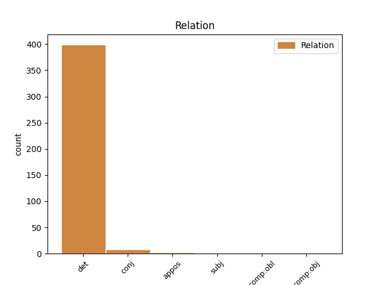
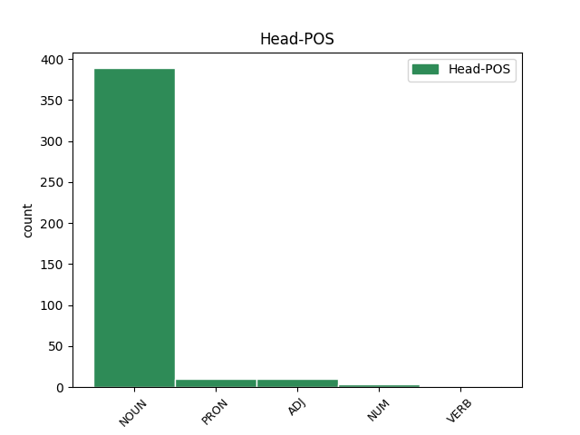
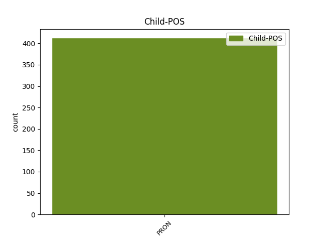

Distribution of features within this leaf



Agreement Rules sorted by frequency.
- When the dependent token is the determiner(det) of the head token, and the dependent token is PRON.
1 Αυτό _ _ _ _ 0 _ _ _
2 μπορεί _ _ _ _ 0 _ _ _
3 να _ _ _ _ 0 _ _ _
4 μην _ _ _ _ 0 _ _ _
5 οδηγήσει _ _ _ _ 0 _ _ _
6 σ _ _ _ _ 0 _ _ _
7 τη _ _ _ _ 0 _ _ _
8 λήξη _ _ _ _ 0 _ _ _
9 του _ _ _ _ 0 _ _ _
10 εν _ _ _ _ 0 _ _ _
11 λόγω _ _ _ _ 0 _ _ _
12 ζητήματος _ _ _ _ 0 _ _ _
13 αλλά _ _ _ _ 0 _ _ _
14 , _ _ _ _ 0 _ _ _
15 σ _ _ _ _ 0 _ _ _
16 τη _ _ _ _ 0 _ _ _
17 μορφή _ _ _ _ 0 _ _ _
18 υπό _ _ _ _ 0 _ _ _
19 την _ _ _ _ 0 _ _ _
20 οποία _ _ _ _ 0 _ _ _
21 την _ _ _ _ 0 _ _ _
22 λάβαμε _ _ _ _ 0 _ _ _
23 , _ _ _ _ 0 _ _ _
24 αυτή αυτός PRON PRON Case=Nom|Gender=Fem|Number=Sing|Person=3|PronType=Dem 26 det _ _
25 η _ _ _ _ 0 _ _ _
26 αίτηση αίτηση NOUN NOUN Case=Nom|Gender=Fem|Number=Sing 0 _ _ _
27 άρσης _ _ _ _ 0 _ _ _
28 της _ _ _ _ 0 _ _ _
29 ασυλίας _ _ _ _ 0 _ _ _
30 ήταν _ _ _ _ 0 _ _ _
31 , _ _ _ _ 0 _ _ _
32 κατά _ _ _ _ 0 _ _ _
33 την _ _ _ _ 0 _ _ _
34 άποψη _ _ _ _ 0 _ _ _
35 της _ _ _ _ 0 _ _ _
36 Επιτροπής _ _ _ _ 0 _ _ _
37 Νομικών _ _ _ _ 0 _ _ _
38 Θεμάτων _ _ _ _ 0 _ _ _
39 , _ _ _ _ 0 _ _ _
40 απαράδεκτη _ _ _ _ 0 _ _ _
41 , _ _ _ _ 0 _ _ _
42 άποψη _ _ _ _ 0 _ _ _
43 την _ _ _ _ 0 _ _ _
44 οποία _ _ _ _ 0 _ _ _
45 συνιστώ _ _ _ _ 0 _ _ _
46 σ _ _ _ _ 0 _ _ _
47 το _ _ _ _ 0 _ _ _
48 Σώμα _ _ _ _ 0 _ _ _
49 να _ _ _ _ 0 _ _ _
50 υιοθετήσει _ _ _ _ 0 _ _ _
51 . _ _ _ _ 0 _ _ _
1 Το _ _ _ _ 0 _ _ _
2 ζητούμενο _ _ _ _ 0 _ _ _
3 δεν _ _ _ _ 0 _ _ _
4 είναι _ _ _ _ 0 _ _ _
5 μόνον _ _ _ _ 0 _ _ _
6 ποιος _ _ _ _ 0 _ _ _
7 θα _ _ _ _ 0 _ _ _
8 επιτύχει _ _ _ _ 0 _ _ _
9 τα _ _ _ _ 0 _ _ _
10 περισσότερα _ _ _ _ 0 _ _ _
11 , _ _ _ _ 0 _ _ _
12 η _ _ _ _ 0 _ _ _
13 Επιτροπή _ _ _ _ 0 _ _ _
14 ή _ _ _ _ 0 _ _ _
15 το _ _ _ _ 0 _ _ _
16 Συμβούλιο συμβούλιο NOUN NOUN Case=Nom|Gender=Neut|Number=Sing 0 _ _ _
17 ή _ _ _ _ 0 _ _ _
18 εμείς εγώ PRON PRON Case=Nom|Gender=Masc|Number=Plur|Person=1|PronType=Prs 16 conj _ _
19 ως _ _ _ _ 0 _ _ _
20 Κοινοβούλιο _ _ _ _ 0 _ _ _
21 , _ _ _ _ 0 _ _ _
22 όχι _ _ _ _ 0 _ _ _
23 ! _ _ _ _ 0 _ _ _
1 Σ _ _ _ _ 0 _ _ _
2 το _ _ _ _ 0 _ _ _
3 εσωτερικό _ _ _ _ 0 _ _ _
4 του _ _ _ _ 0 _ _ _
5 φρουρίου _ _ _ _ 0 _ _ _
6 , _ _ _ _ 0 _ _ _
7 τα _ _ _ _ 0 _ _ _
8 σπίτια _ _ _ _ 0 _ _ _
9 ήταν _ _ _ _ 0 _ _ _
10 μικρά _ _ _ _ 0 _ _ _
11 και _ _ _ _ 0 _ _ _
12 χτισμένα χτίζω ADJ ADJ Case=Nom|Gender=Neut|Number=Plur 0 _ _ _
13 το _ _ _ _ 0 _ _ _
14 ένα ένας PRON PRON Case=Nom|Gender=Neut|Number=Sing|Person=3|PronType=Ind 12 subj _ _
15 πολύ _ _ _ _ 0 _ _ _
16 κοντά _ _ _ _ 0 _ _ _
17 σ _ _ _ _ 0 _ _ _
18 το _ _ _ _ 0 _ _ _
19 άλλο _ _ _ _ 0 _ _ _
20 , _ _ _ _ 0 _ _ _
21 λόγω _ _ _ _ 0 _ _ _
22 έλλειψης _ _ _ _ 0 _ _ _
23 χώρου _ _ _ _ 0 _ _ _
24 . _ _ _ _ 0 _ _ _
1 Ένα _ _ _ _ 0 _ _ _
2 από _ _ _ _ 0 _ _ _
3 τα _ _ _ _ 0 _ _ _
4 ζητήματα _ _ _ _ 0 _ _ _
5 που _ _ _ _ 0 _ _ _
6 θα _ _ _ _ 0 _ _ _
7 πρέπει _ _ _ _ 0 _ _ _
8 προφανώς _ _ _ _ 0 _ _ _
9 να _ _ _ _ 0 _ _ _
10 ελέγχει _ _ _ _ 0 _ _ _
11 η _ _ _ _ 0 _ _ _
12 Επιτροπή _ _ _ _ 0 _ _ _
13 είναι _ _ _ _ 0 _ _ _
14 εάν _ _ _ _ 0 _ _ _
15 οι _ _ _ _ 0 _ _ _
16 αλλοδαποί _ _ _ _ 0 _ _ _
17 μεταφορείς _ _ _ _ 0 _ _ _
18 ελέγχονται _ _ _ _ 0 _ _ _
19 αυστηρότερα _ _ _ _ 0 _ _ _
20 από _ _ _ _ 0 _ _ _
21 ό,τι _ _ _ _ 0 _ _ _
22 οι _ _ _ _ 0 _ _ _
23 ημεδαποί ημεδαπός ADJ ADJ Case=Nom|Gender=Masc|Number=Plur 0 _ _ _
24 , _ _ _ _ 0 _ _ _
25 δηλαδή _ _ _ _ 0 _ _ _
26 όσοι όσος PRON PRON Case=Nom|Gender=Masc|Number=Plur|Person=3|PronType=Ind,Rel 23 appos _ _
27 έχουν _ _ _ _ 0 _ _ _
28 την _ _ _ _ 0 _ _ _
29 ίδια _ _ _ _ 0 _ _ _
30 υπηκοότητα _ _ _ _ 0 _ _ _
31 με _ _ _ _ 0 _ _ _
32 τους _ _ _ _ 0 _ _ _
33 ελεγκτές _ _ _ _ 0 _ _ _
34 . _ _ _ _ 0 _ _ _
Disagree Examples:
1 Γι' _ _ _ _ 0 _ _ _
2 αυτό _ _ _ _ 0 _ _ _
3 το _ _ _ _ 0 _ _ _
4 λόγο _ _ _ _ 0 _ _ _
5 - _ _ _ _ 0 _ _ _
6 όπως _ _ _ _ 0 _ _ _
7 είπατε _ _ _ _ 0 _ _ _
8 - _ _ _ _ 0 _ _ _
9 μας εγώ PRON PRON Case=Gen|Gender=Masc|Number=Plur|Person=1|PronType=Prs 11 comp:obl _ _
10 είναι _ _ _ _ 0 _ _ _
11 δύσκολο δύσκολος ADJ ADJ Case=Nom|Gender=Neut|Number=Sing 0 _ _ _
12 να _ _ _ _ 0 _ _ _
13 δεχτούμε _ _ _ _ 0 _ _ _
14 τον _ _ _ _ 0 _ _ _
15 τρόπο _ _ _ _ 0 _ _ _
16 με _ _ _ _ 0 _ _ _
17 τον _ _ _ _ 0 _ _ _
18 οποίο _ _ _ _ 0 _ _ _
19 λήφθηκαν _ _ _ _ 0 _ _ _
20 σ _ _ _ _ 0 _ _ _
21 τις _ _ _ _ 0 _ _ _
22 27_Δεκεμβρίου _ _ _ _ 0 _ _ _
23 οι _ _ _ _ 0 _ _ _
24 αποφάσεις _ _ _ _ 0 _ _ _
25 σχετικά _ _ _ _ 0 _ _ _
26 με _ _ _ _ 0 _ _ _
27 τα _ _ _ _ 0 _ _ _
28 τέσσερα _ _ _ _ 0 _ _ _
29 νομοθετικά _ _ _ _ 0 _ _ _
30 μέσα _ _ _ _ 0 _ _ _
31 για _ _ _ _ 0 _ _ _
32 τη _ _ _ _ 0 _ _ _
33 δημιουργία _ _ _ _ 0 _ _ _
34 ενός _ _ _ _ 0 _ _ _
35 καταλόγου _ _ _ _ 0 _ _ _
36 τρομοκρατών _ _ _ _ 0 _ _ _
37 σ _ _ _ _ 0 _ _ _
38 την _ _ _ _ 0 _ _ _
39 Ευρωπαϊκή _ _ _ _ 0 _ _ _
40 Ένωση _ _ _ _ 0 _ _ _
41 . _ _ _ _ 0 _ _ _
1 Σε _ _ _ _ 0 _ _ _
2 τελική _ _ _ _ 0 _ _ _
3 ανάλυση _ _ _ _ 0 _ _ _
4 , _ _ _ _ 0 _ _ _
5 σ _ _ _ _ 0 _ _ _
6 το _ _ _ _ 0 _ _ _
7 παράδειγμα _ _ _ _ 0 _ _ _
8 του _ _ _ _ 0 _ _ _
9 Λουξεμβούργου _ _ _ _ 0 _ _ _
10 είναι _ _ _ _ 0 _ _ _
11 και _ _ _ _ 0 _ _ _
12 οι _ _ _ _ 0 _ _ _
13 δύο _ _ _ _ 0 _ _ _
14 χαμένοι χάνω VERB VERB Aspect=Perf|Case=Nom|Gender=Masc|Number=Plur|VerbForm=Part|Voice=Pass 0 _ _ _
15 , _ _ _ _ 0 _ _ _
16 κάτι κάτι PRON PRON Case=Acc|Gender=Neut|Number=Sing|Person=3|PronType=Ind 14 appos _ _
17 που _ _ _ _ 0 _ _ _
18 επισημάναμε _ _ _ _ 0 _ _ _
19 ακόμα _ _ _ _ 0 _ _ _
20 μια _ _ _ _ 0 _ _ _
21 φορά _ _ _ _ 0 _ _ _
22 σ _ _ _ _ 0 _ _ _
23 την _ _ _ _ 0 _ _ _
24 Επιτροπή _ _ _ _ 0 _ _ _
25 με _ _ _ _ 0 _ _ _
26 την _ _ _ _ 0 _ _ _
27 περιβόητη _ _ _ _ 0 _ _ _
28 έκθεση _ _ _ _ 0 _ _ _
29 van _ _ _ _ 0 _ _ _
30 Dam _ _ _ _ 0 _ _ _
31 . _ _ _ _ 0 _ _ _
1 Τόνισε _ _ _ _ 0 _ _ _
2 μάλιστα _ _ _ _ 0 _ _ _
3 , _ _ _ _ 0 _ _ _
4 όπως _ _ _ _ 0 _ _ _
5 και _ _ _ _ 0 _ _ _
6 άλλοι άλλος PRON PRON Case=Nom|Gender=Masc|Number=Plur|Person=3|PronType=Ind 7 det _ _
7 ομιλητές ομιλητής NOUN NOUN Case=Acc|Gender=Masc|Number=Plur 0 _ _ _
8 , _ _ _ _ 0 _ _ _
9 ότι _ _ _ _ 0 _ _ _
10 " _ _ _ _ 0 _ _ _
11 η _ _ _ _ 0 _ _ _
12 Ευρώπη _ _ _ _ 0 _ _ _
13 πρέπει _ _ _ _ 0 _ _ _
14 δραστικά _ _ _ _ 0 _ _ _
15 να _ _ _ _ 0 _ _ _
16 επανεξετάσει _ _ _ _ 0 _ _ _
17 τις _ _ _ _ 0 _ _ _
18 δικές _ _ _ _ 0 _ _ _
19 της _ _ _ _ 0 _ _ _
20 ευθύνες _ _ _ _ 0 _ _ _
21 και _ _ _ _ 0 _ _ _
22 να _ _ _ _ 0 _ _ _
23 μοιραστεί _ _ _ _ 0 _ _ _
24 το _ _ _ _ 0 _ _ _
25 ευρωπαϊκό _ _ _ _ 0 _ _ _
26 αυτό _ _ _ _ 0 _ _ _
27 πρόβλημα _ _ _ _ 0 _ _ _
28 και _ _ _ _ 0 _ _ _
29 όχι _ _ _ _ 0 _ _ _
30 να _ _ _ _ 0 _ _ _
31 διατηρεί _ _ _ _ 0 _ _ _
32 την _ _ _ _ 0 _ _ _
33 άποψη _ _ _ _ 0 _ _ _
34 ότι _ _ _ _ 0 _ _ _
35 αυτό _ _ _ _ 0 _ _ _
36 είναι _ _ _ _ 0 _ _ _
37 πρόβλημα _ _ _ _ 0 _ _ _
38 λίγων _ _ _ _ 0 _ _ _
39 χωρών _ _ _ _ 0 _ _ _
40 και _ _ _ _ 0 _ _ _
41 κυρίως _ _ _ _ 0 _ _ _
42 της _ _ _ _ 0 _ _ _
43 Ελλάδας _ _ _ _ 0 _ _ _
44 " _ _ _ _ 0 _ _ _
45 . _ _ _ _ 0 _ _ _
1 Τα _ _ _ _ 0 _ _ _
2 μηχανήματα _ _ _ _ 0 _ _ _
3 αυτόματης _ _ _ _ 0 _ _ _
4 συναλλαγής _ _ _ _ 0 _ _ _
5 δεν _ _ _ _ 0 _ _ _
6 δίνουν _ _ _ _ 0 _ _ _
7 χαρτονομίσματα _ _ _ _ 0 _ _ _
8 των _ _ _ _ 0 _ _ _
9 είκοσι _ _ _ _ 0 _ _ _
10 ευρώ _ _ _ _ 0 _ _ _
11 , _ _ _ _ 0 _ _ _
12 ούτε _ _ _ _ 0 _ _ _
13 δέχονται _ _ _ _ 0 _ _ _
14 ευρώ _ _ _ _ 0 _ _ _
15 που _ _ _ _ 0 _ _ _
16 εκδόθηκαν _ _ _ _ 0 _ _ _
17 σε _ _ _ _ 0 _ _ _
18 άλλες _ _ _ _ 0 _ _ _
19 χώρες _ _ _ _ 0 _ _ _
20 και _ _ _ _ 0 _ _ _
21 οι _ _ _ _ 0 _ _ _
22 παραχαράκτες _ _ _ _ 0 _ _ _
23 ευνοούνται _ _ _ _ 0 _ _ _
24 καθώς _ _ _ _ 0 _ _ _
25 κανείς κανένας PRON PRON Case=Nom|Gender=Masc|Number=Sing|Person=3|PronType=Ind 29 det _ _
26 δεν _ _ _ _ 0 _ _ _
27 είναι _ _ _ _ 0 _ _ _
28 σε _ _ _ _ 0 _ _ _
29 θέση θέση NOUN NOUN Case=Acc|Gender=Fem|Number=Sing 0 _ _ _
30 να _ _ _ _ 0 _ _ _
31 αναγνωρίζει _ _ _ _ 0 _ _ _
32 τα _ _ _ _ 0 _ _ _
33 νέα _ _ _ _ 0 _ _ _
34 χαρτονομίσματα _ _ _ _ 0 _ _ _
35 . _ _ _ _ 0 _ _ _
1 Δεν _ _ _ _ 0 _ _ _
2 θέλω _ _ _ _ 0 _ _ _
3 να _ _ _ _ 0 _ _ _
4 κατονομάσω _ _ _ _ 0 _ _ _
5 εδώ _ _ _ _ 0 _ _ _
6 επιχειρήσεις _ _ _ _ 0 _ _ _
7 , _ _ _ _ 0 _ _ _
8 ωστόσο _ _ _ _ 0 _ _ _
9 ορισμένα _ _ _ _ 0 _ _ _
10 ονόματα _ _ _ _ 0 _ _ _
11 του _ _ _ _ 0 _ _ _
12 συγκεκριμένου _ _ _ _ 0 _ _ _
13 τομέα _ _ _ _ 0 _ _ _
14 μας εγώ PRON PRON Case=Gen|Gender=Masc|Number=Plur|Person=3|PronType=Prs 16 comp:obj _ _
15 είναι _ _ _ _ 0 _ _ _
16 γνωστά γνωστός ADJ ADJ Case=Nom|Gender=Neut|Number=Plur 0 _ _ _
17 . _ _ _ _ 0 _ _ _